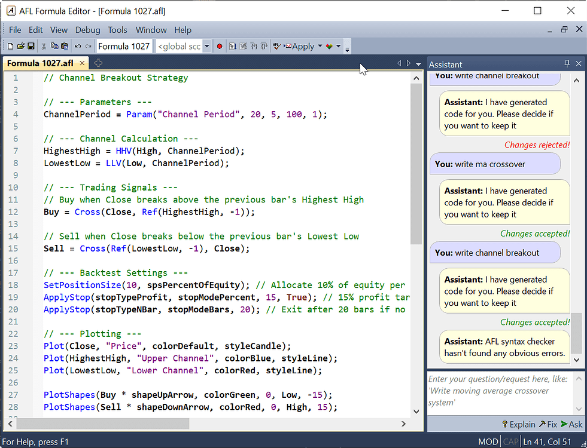
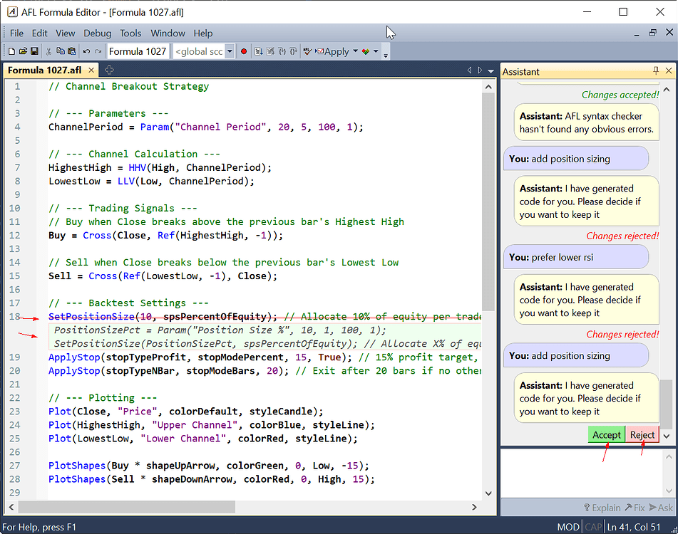
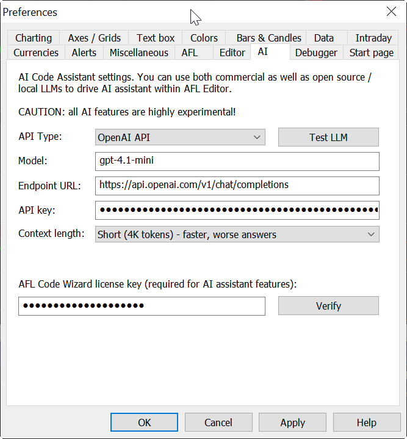
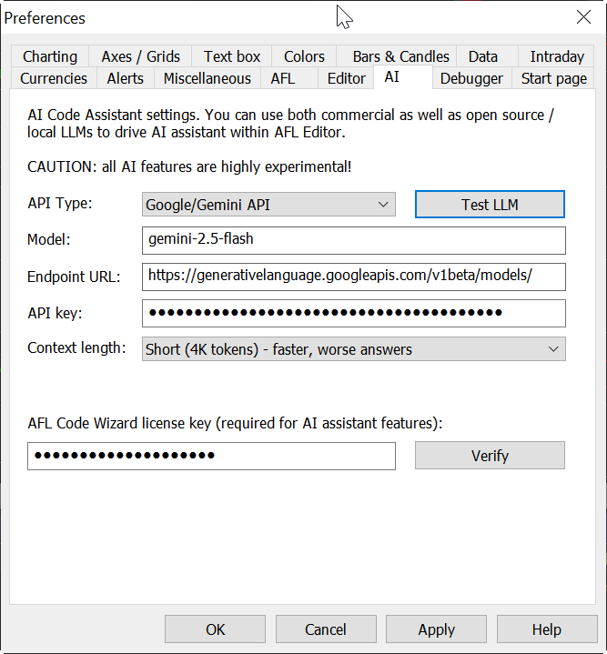
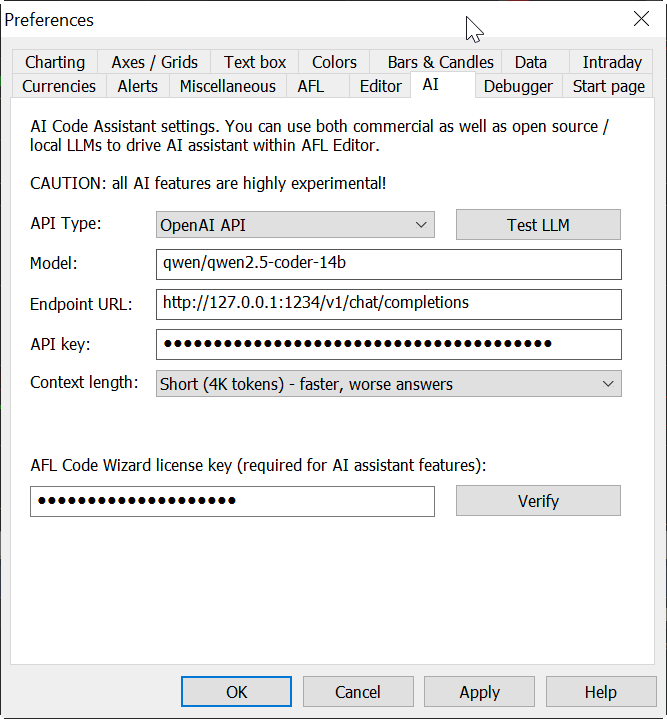
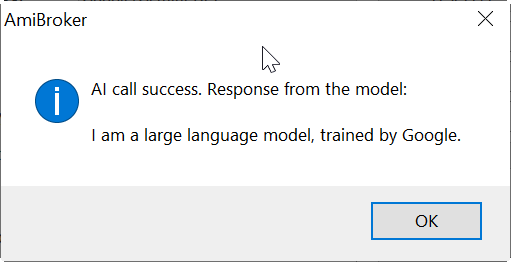
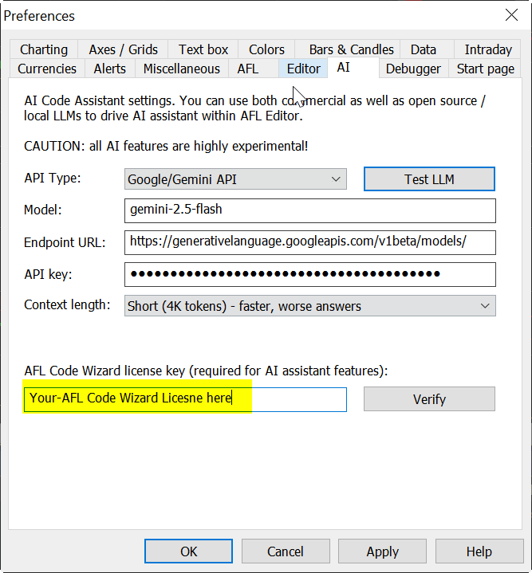

IMPORTANT: Please note that using AI-driven AFL Code Assistant requires one-time configuration of its "brain", large language model, and the process is described later in this guide.

The Assistant is available as a side window in the AFL Editor (you can show/hide the Assistant window using the Window -> AFL Code Assistant menu).
The Assistant window is divided into two parts
You don't need to be verbose in your request; the Assistant is smart enough to produce useful results with minimal prompts like "write channel breakout". The entire code that can be seen on the screenshot was generated in response to just this single prompt.
There are 3 basic actions that you do with the Assistant, represented by buttons at the bottom of the Assistant window
Of course, you can also ask any other question / give any other request. The Assistant may either generate code for you and offer changes, or it may generate a textual response (as in the "Explain" case) that is displayed in the upper pane.
When the Assistant proposes changes in the code, it will display changes directly in the editor; new (added) parts will be displayed with a green background and italic font. Lines that are to be deleted are struck through using a red line as shown in the picture. Now it is the user's task to review and accept or reject changes using "Accept" or "Reject" buttons. Note that any manual edits done to the formula while the wizard waits for you to decide, will result in the automatic rejection of the changes.

PRIVACY NOTE: by using Cloud AI services like OpenAI/Google Gemini, you will be sending your questions / requests and the formula that you edit to OpenAI/Gemini large language model for inference. Privacy-wise, it is no different from using OpenAI/Google website directly. The transmission is secure and encrypted (via SSL/HTTPS), but obviously OpenAI and Google can see what you are sending to them.
PERFORMANCE NOTE: Using cloud-based LLM gives you access to state-of-the-art models that are much faster and much more capable than any local or open-source model can be. The trade-off is privacy.
Note: You won't be able to view this key again once you navigate away from the page.
Note: This key is essential for authenticating API requests.
PRIVACY NOTE: by using local private LLM, your requests and your code do NOT leave your machine. Everything is processed locally and nothing is sent anywhere.
PERFORMANCE NOTE: Using local private LLM gives you maximum privacy but limits you to open-weight models that are typically smaller and much less capable than state-of-the-art offered by cloud-based services. Typically they are also much (10x) slower (when run on consumer-grade graphics cards). To get any kind of tolerable performance you need a dedicated graphics card (NVidia or AMD) with at least 8GB of VRAM (12GB or more preferred) that is needed to accelerate inference.
If you prefer not to rely on external APIs, you can run a local LLM using LM Studio.
127.0.0.1.1234.For detailed instructions, refer to the LM Studio documentation.
Open AmiBroker.
Navigate to Tools → Preferences → AI tab.
For OpenAI:
gpt-4.1-mini (we recommend this one for a balance between cost and performance, but you can use any other)https://api.openai.com/v1/chat/completions
For Google Gemini:
gemini-2.5-flash (we recommend this one for a balance between cost and performance, but you can use any other)https://generativelanguage.googleapis.com/v1beta/models/
For Local LLM:
qwen/qwen2.5-coder-14b (this model we have been testing, it works relatively well on a 12GB RTX 3060 or higher)http://127.0.0.1:1234/v1/vhat/completions
At the end, you need to decide whether you want to use "Short" (about 4K tokens) or "Long" (about 32K tokens) context length. The difference is that, when you choose "Long" context, significantly more information is fed into the LLM (including full function reference) and that enables much better responses. The trade-off is the speed. Long Context means a slower response. It also means more VRAM use in the case of a local LLM. During our own testing, we found that for a local LLM it is rather impossible to use Long Context. On the other hand, Long Context works absolutely great with fast and capable cloud-based models like gemini-2.5-flash
After you have configured everything as above, now it is time to test whether it works at all. You should press the Test LLM button. If everything is set up properly, you should see a message similar to this (text may vary depending on LLM used):

If something went wrong, you will see an error message with an explanation of what the error is.
The final step is entering the AFL Code Wizard License Key into the respective field:

Anyone who has AFL Code Wizard already installed and registered will have the license key pre-filled. If you don't have a key, you would find it either in the "AFL Code Wizard registration" email or, if you purchased the AmiBroker ULTIMATE PACK, in the "AmiBroker registration" email. Note that the AFL Code Wizard license is separate from AmiBroker (unless you purchased Ultimate Pack).
If you don't have an AFL Code Wizard license and don't want to purchase it, the ability to use the AI Assistant in the AFL Code Editor will be limited to 5 completions/responses per run.
Depending on which route you choose, there might be extra costs involved in using AI features. Running a local LLM gives you a cost-free solution (not counting the fact that you pay electricity bills and you need to have a machine with a dedicated graphics card). Running cloud-based AI typically involves paying fees for inference to the AI/LLM vendor. Pricing depends on the model that you choose and the number of tokens used. AmiBroker doesn't use many tokens as it does NOT accumulate chat history; therefore, it only sends the current request/question plus the content of the formula plus the system prompt (user-selectable, either 4K tokens or 32K tokens). To simplify things, a token can be seen more or less as a "word". Open AI pricing is here: https://openai.com/api/pricing/, Gemini pricing is here: https://ai.google.dev/gemini-api/docs/pricing. Pricing is typically per million tokens, so OpenAI 4.1 mini with $0.02 per single request/completion using long context.
Google is even better as it has an absolutely great "free tier" that costs nothing and allows, for example, with the Gemini 2.5 Flash model, up to 10 requests per minute, 250,000 tokens per minute, and 250 requests per day.
There are huge differences in performance between various models. We have seen very good results and fast completions with Gemini 2.5 Flash and "Large" context. Still, it can take even 30 seconds if Google servers are particularly busy and the task to do is complex.
Using "Short" prompt makes things ~3x faster, but at the expense of the quality of response.
While state-of-the-art models from Google and OpenAI work quite well, certain open-source models (especially smaller than 12B parameters) struggle to follow instructions and the system prompt and will NOT work at all or work poorly.
As far as private LLMs are concerned, we had average success with qwen2.5-coder-14b, which is an open-weight model specifically trained for coding. Your mileage with open-weight models will vary a lot from being unusable at all to average. Currently open-weight models are nowhere near the state of the art when it comes to AFL writing capabilities.
We have done months of extreme prompt tweaking and experiments to steer these models to cooperate and understand non-obvious aspects of AFL. Please treat these new AI features as a work-in-progress as models evolve, so our prompting techniques evolve too, and we can expect improvements in the future.
Lastly, you might wonder which model I like the most, and I can definitely say the Google Gemini 2.5 family of models is currently best in terms of both performance and coding ability.